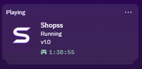

Current presence
The activity uses the minimal SHOPSS layout: Running, v1.0, elapsed time, and a custom S art asset matching the profile theme.
A small Windows companion app that keeps a custom Discord activity running with automatic startup, reconnect logic, and a tray interface.
The current presence uses the minimal SHOPSS design and matching purple branding.

Minimal presence card: SHOPSS icon, Running, v1.0, and elapsed time.The activity uses the minimal SHOPSS layout: Running, v1.0, elapsed time, and a custom S art asset matching the profile theme.
Finished and currently in use as the personal Discord Rich Presence companion.